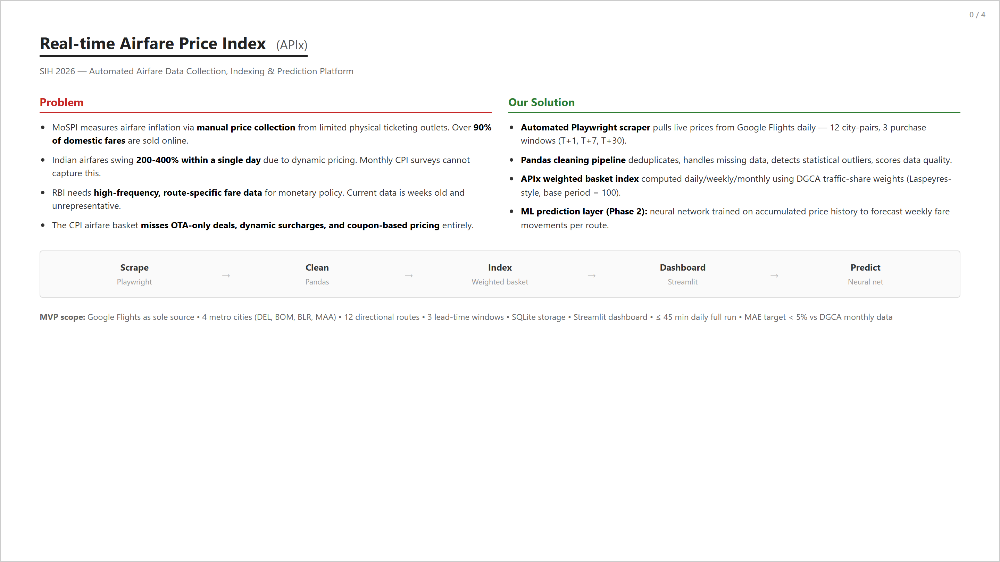
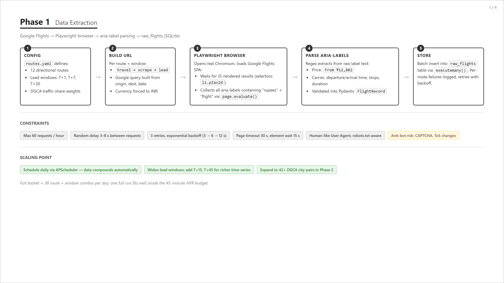
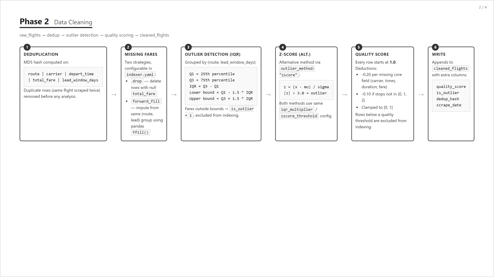
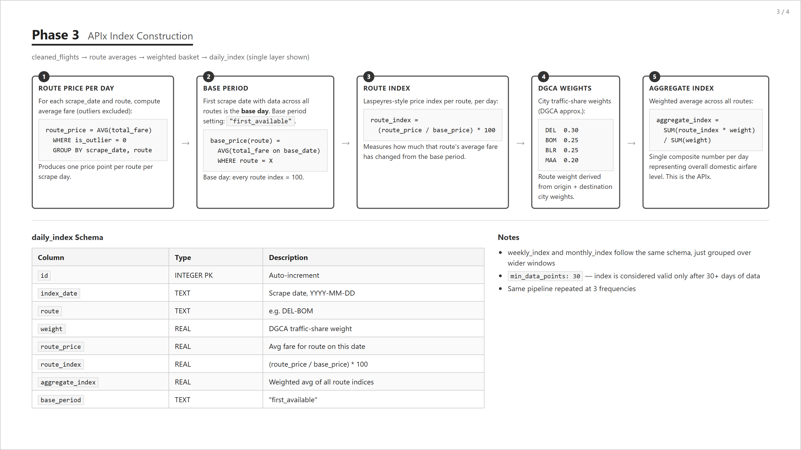
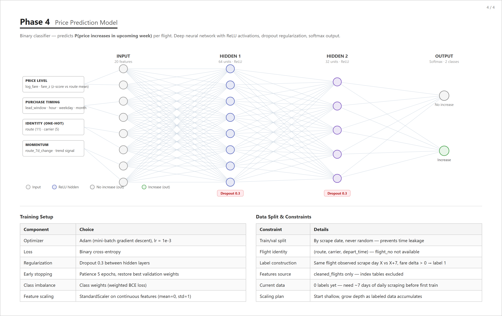

Airfares are volatile and opaque. Travelers can't tell good from bad prices, and India has no official number tracking how the cost of domestic air travel moves over time — unlike CPI/WPI.
APIx is a transparent price index over a fixed basket of 12 metro routes, computed with the same Laspeyres methodology used for national price indices.

raw_flightscleaned_flightsdata/apix.db); dashboard + optional FastAPI layer.

config/indexer.yaml.weighted_mean / weighted_trimmed_mean / weighted_median.mean / trimmed_mean / median) is also config-driven.python -m src.indexer.report — average day move, volatility, worst single jump, extreme-day count.
| Route | w | Route | w | Route | w | Route | w |
|---|---|---|---|---|---|---|---|
| DEL-BOM | 0.10 | BOM-DEL | 0.10 | DEL-BLR | 0.09 | BLR-DEL | 0.09 |
| DEL-MAA | 0.06 | MAA-DEL | 0.06 | BOM-BLR | 0.10 | BLR-BOM | 0.10 |
| BOM-MAA | 0.08 | MAA-BOM | 0.08 | BLR-MAA | 0.07 | MAA-BLR | 0.07 |
12 directional routesweights sum 1.00changeable in one YAML file
The basket is config-driven: replacing it with official DGCA traffic shares is a YAML edit, not a code change.
google_flights.py) + safe browser driver + batch runner; aria-label parsing via page.evaluate().python -m src.indexer.report compares stability per estimator × window and flags which routes' DGCA weights lever the index most.pytest → 52 passed · python -m src.indexer.run_index → writes daily/weekly/monthly index tables · python -m src.indexer.report → estimator stability comparison.

data/apix.db (libraries already in requirements.txt).python -m src.indexer.report to pick the final estimator and review DGCA window shares.